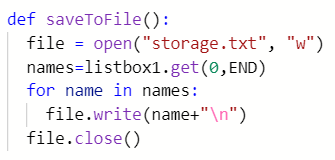
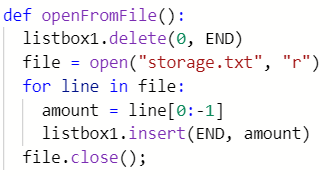
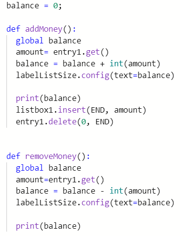

The purpose of the program is to deposit, withdraw, and save money like an ATM machine. You enter money and depending on whether you want to deposit or withdraw it will calculate your balance by adding or subtracting. The user clicks a button and saves it to a text file. The user inputs a number (money) and the output is the printed value of the money withdrawn or deposited.
|  |  |  |
|---|---|---|
The name of the list being used is name. The data being contained in the list is the transaction history or the money they deposited in the listbox. |
The list manages complexity in my code because if it were not written then nothing would be saved, the user wouldn’t be able to track how much money they deposited because even with the balance being calculated the list box is an extra step to track down the user’s input history. |
I named a variable called balance and made it global so that we can call it anytime. You can add or remove money due to the balance function having an integer in it containing the mathematical equation to add or subtract. |